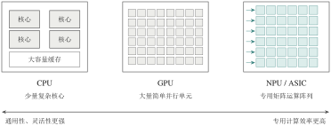
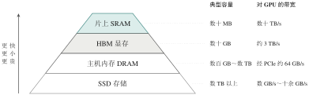
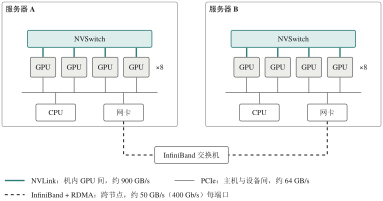
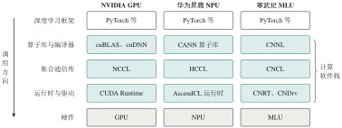

4.2 算力资源：让计算算得快、存得下、传得动
上一节的估算给出了三项硬要求：高算力、大容量高带宽的存储，以及高速互联。硬件如何满足它们？计算芯片提供算力，HBM 等存储提供容量与带宽，NVLink、InfiniBand 等互联技术把多卡多机连成整体，驱动与计算软件栈再把这些能力开放给上层软件。不过要记住，硬件只决定性能的上界，能否接近上界，还要看软件能否用好它。
4.2.1 计算芯片：CPU、GPU 与 NPU/ASIC
先看大模型到底在算什么。无论是注意力中的投影、注意力分数与加权求和，还是前馈网络中的两次线性变换，Transformer 的绝大部分计算都可以归结为矩阵乘法。矩阵乘法由海量彼此独立的乘加运算组成，谁先算、谁后算都不影响结果。因此，决定速度的不是单个运算有多快，而是同一时刻能有多少运算并行进行——大模型需要的是高并行吞吐，而不是单个任务的低延迟。
哪种芯片能提供这样的吞吐？不同芯片在“通用性”与“专用效率”之间做出了不同取舍（图 4-3）。
CPU（Central Processing Unit，中央处理器）核心数较少，但每个核心具有复杂的分支预测和多级缓存，擅长控制流密集、需要低延迟响应的通用任务。在大模型系统中，CPU 通常负责操作系统、数据预处理、请求编排、内存管理，以及向加速器下发计算任务。
GPU（Graphics Processing Unit，图形处理器）集成了成千上万个并行执行单元，并配有专门的矩阵乘加单元（如 NVIDIA 的 Tensor Core）和高带宽显存，适合训练和推理中的大规模线性代数运算[4]。
NPU（Neural Processing Unit，神经网络处理器）泛指为神经网络计算专门优化的处理器；ASIC（Application-Specific Integrated Circuit，专用集成电路）则泛指为特定用途定制设计的芯片。二者并非互斥的分类——前者按用途命名，后者按实现方式命名，一款 NPU 完全可以用 ASIC 方式实现。Google TPU、华为昇腾 NPU 和寒武纪 MLU 都属于这一类。

图 4-3 三类计算芯片的结构取舍（示意）。从左到右，芯片的通用性逐渐降低，矩阵运算的吞吐与能效逐渐提高
实际系统中，CPU 与加速器是协同关系而非替代关系：CPU 负责发起和调度，GPU 或 NPU 负责执行吞吐密集的张量运算。表 4-2 对几类芯片做了概括。
表 4-2 计算芯片的适用性比较
| 类型 | 典型优点 | 典型限制 | 在大模型系统中的职责 |
|---|---|---|---|
| CPU | 控制灵活，软件生态成熟 | 张量吞吐远低于专用加速器 | 预处理、调度、系统服务、小模型推理 |
| GPU | 并行吞吐高，深度学习生态成熟 | 显存容量有限，多卡互联成本高 | 训练、微调、高吞吐推理 |
| NPU / ASIC | 针对矩阵和低精度运算优化，能效高 | 框架、算子与驱动的兼容性因平台而异 | 云端或边缘侧的专用 AI 计算 |
| FPGA | 可重构，可定制数据通路 | 开发难度大，生态不如 GPU | 特定低延迟或定制化场景 |
专用化换来了更高的吞吐与能效，代价又是什么？一是通用性下降，二是软件生态的绑定加深。这也提醒我们，选择芯片时不能只比较“TFLOPS”或“TOPS”一个数字：不同精度（FP16、BF16、FP8、INT8）、是否计入稀疏加速，测得的峰值差别可达数倍。更可靠的做法是同时比较目标模型的支持情况、低精度格式、板载存储容量、编译器与算子库的成熟度、框架适配、集群通信能力，以及采购和运维成本。
4.2.2 存储层次：为什么 HBM 如此重要
第 4.1.2 小节留下了一个结论：解码时，每生成一个 token 都要把全部权重从显存读一遍，速度上限由显存带宽决定。训练时情况更紧张——权重、梯度、优化器状态和激活值都要驻留在设备上。于是存储系统要同时回答两个问题：装不装得下，以及送不送得及。
单一一种存储无法同时做到又大、又快、又便宜，计算机的办法是分层（图 4-4）。越靠近计算单元，存储越快、越小、越贵：片上 SRAM（寄存器、共享内存、缓存）带宽最高但容量只有数十 MB；板载显存容量为数十 GB；主机内存（DRAM）可达 TB 级，但 GPU 访问它要经过 PCIe，带宽比显存低一个数量级以上；SSD 用于存放模型文件和冷数据。

图 4-4 加速器视角下的存储层次（数量级示意，以 H100 级数据中心 GPU 为参照）。模型权重和 KV 缓存主要驻留在 HBM 中，计算时被反复读入片上 SRAM
在这个层次中，显存这一级对大模型最为关键，而高带宽内存（High Bandwidth Memory，HBM）是当前数据中心加速器的主流显存方案。它把多层 DRAM 芯片垂直堆叠，用硅通孔（Through-Silicon Via，TSV）实现层间互联，再通过很宽的接口（每个堆栈 1024 位）与计算芯片封装在一起。接口宽、距离短，使 HBM 能在有限的功耗和面积内提供远高于 GDDR 等传统显存的带宽。例如 H100 SXM 配备 80 GB HBM3，带宽约 3.35 TB/s[7]。
不过，HBM 解决的主要是“送不送得及”，而不是“装不装得下”。它价格昂贵，容量依然有限；运行大模型也并非必须使用 HBM——消费级显卡的 GDDR 显存同样可以运行规模适中或经过量化的模型。不妨把三个指标的分工记在一起：容量决定模型和状态能否装下，带宽决定数据能否及时送达，延迟影响细粒度访问的效率。
辨析
“7B 模型 4 位量化后仅权重就约 3.5 GB”不等于“有 4 GB 显存就能运行”。实际运行还需要存放量化缩放系数等元数据、KV 缓存、运行时缓冲区和临时张量，并存在内存碎片。估算时应在权重之外预留足够余量。
4.2.3 互联技术：PCIe、NVLink 与 InfiniBand
一张卡总有装不下、算不完的时候。例 4-1 表明，大模型训练需要成百上千张卡协同工作；即使只做推理，较大的模型也常常要切分到多张卡上。一旦切分，卡与卡之间就要不断交换梯度、激活值和中间结果。此时计算单元再快，如果数据迟迟不到，也只能空等。
讨论互联时，最有用的问题不是“哪种技术更快”，而是“数据要从哪里传到哪里”。不同层级的链路各有分工（图 4-5）：
PCIe（PCI Express）是通用的设备互联总线，连接 CPU 与 GPU、网卡、NVMe 硬盘等外设。PCIe 5.0 x16 的单向带宽约 64 GB/s。
NVLink 是 NVIDIA 的 GPU 高速互联技术，用于同一服务器内 GPU 与 GPU（或与 Grace CPU）之间的直接通信，带宽远高于 PCIe（H100 每卡 NVLink 总带宽约 900 GB/s[7]）。配合 NVSwitch 交换芯片，可以让一台服务器内的 8 张 GPU 两两全速互联。
InfiniBand（IB）是面向高性能计算集群的跨节点网络，单端口带宽可达 400 Gb/s（NDR）。它原生支持 RDMA（Remote Direct Memory Access，远程直接内存访问）：数据可以直接写入远端机器的内存，而不必经过双方 CPU 的多次拷贝和内核协议栈处理。以太网借助 RoCE（RDMA over Converged Ethernet）也能实现 RDMA，成本较低，但在拥塞控制和延迟稳定性上通常需要更细致的调优。

图 4-5 单机内与跨节点的典型数据通路（示意）。机内 GPU 经 NVLink/NVSwitch 互联，GPU 与 CPU、网卡之间经 PCIe 连接，不同服务器之间经 InfiniBand 网络通信。带宽为 H100 一代硬件的数量级参考值，具体取决于配置
把这几个数字放在一起，就能看出一条规律：不同层级链路的带宽相差一个数量级以上，因此通信越频繁的工作，越应该放在越近的地方。第 4.3.4 小节会看到，张量并行每一层都要通信，应当留在 NVLink 相连的同一台机器内；数据并行、流水线并行通信较少，才适合跨越 InfiniBand 网络。也正因为二者位于不同的互联层级、解决不同的问题，NVLink 与 InfiniBand 不应混为一谈。
辨析
“RDMA 完全绕过操作系统”只是一种简化说法。实际使用 RDMA 仍需注册内存、加载驱动、管理权限与连接；更准确的表述是：RDMA 在数据传输路径上省去了常规的 CPU 数据拷贝和部分内核协议处理，从而降低延迟和 CPU 开销。
4.2.4 驱动与计算软件栈：CUDA、CANN 与 NeuWare
有了芯片、存储和互联，还差最后一环：硬件只能执行机器指令，而算法开发者写的是 torch.matmul 这样的高层算子，谁来完成两者之间的翻译？答案是一套软件，它负责把高层算子翻译成设备上可执行的内核（kernel），并管理设备内存、任务调度和多卡通信。
这套软件称为计算软件栈，通常包括驱动、运行时、编译器、算子库和集合通信库五部分。以一次矩阵乘法为例（图 4-6）：框架收到 matmul 调用后选择具体实现；算子库（或编译器生成的代码）提供针对该硬件优化的内核；运行时负责分配显存、启动内核和同步；驱动把命令提交给硬件执行。多卡训练时，集合通信库负责完成 All-Reduce 等跨设备数据交换。

图 4-6 计算软件栈的层次与三种平台的对应组件。一次矩阵乘法调用自上而下依次经过各层；不同平台的组件职责相似，但实现与行为并不完全等价
不同硬件平台各有自己的软件栈：
CUDA 是 NVIDIA 面向自家 GPU 的并行计算平台和编程模型，包括编程接口、编译器、运行时，以及 cuBLAS（线性代数）、cuDNN（深度学习算子）、NCCL（集合通信）等库[8]。经过近二十年积累，CUDA 生态是当前大模型训练与推理最主要的底层基础。
CANN 是华为昇腾 NPU 的异构计算架构，提供编译器、运行时、算子库和 HCCL 集合通信库，承担与 CUDA 类似的职责。
NeuWare 是寒武纪 MLU 系列芯片的基础软件平台，同样包含编程接口、编译工具与基础算子库。
软件栈的成熟程度，决定了硬件峰值性能能够发挥出多少。同一个模型在不同平台上的性能、算子支持范围和调试方法之所以不同，根源往往就在这一层。可见，CANN 等软件栈并非“PyTorch 的一个插件”；即使接口名称相似，也不能想当然地认为所有算子的行为和精度完全一致，迁移模型时需要逐项验证。
本节要点
芯片提供算力，存储提供容量与带宽，互联技术连接多卡多机，软件栈把硬件能力开放给上层。
判断硬件是否合适，要同时看算力、显存容量、显存带宽、互联拓扑和软件生态，而非单一峰值指标。
并行策略应与互联拓扑相匹配：通信越频繁的切分，越应放在带宽越高的链路上。